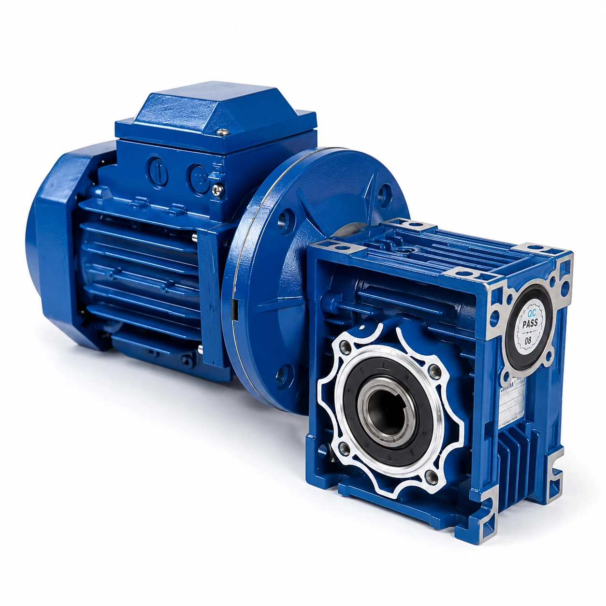

Belt Conveyor
A compact belt conveyor gearbox can provide steady low-speed drive for packaging, warehousing and general material transfer. Ratio, pulley diameter, belt load and incline should be checked together.
CONVEYOR DRIVE SOLUTIONS
SMK Transmission supports belt conveyors, roller conveyors, chain conveyors and material handling systems with matched gearbox and gear motor solutions. Available options include NMRV worm gearboxes, BKM hypoid gearboxes, gear motors and electric motors for different ratios, motor powers, output speeds and mounting arrangements. Send your conveyor parameters to compare practical drive options and confirm the reducer size, motor interface and configuration for your equipment.

Each conveyor type places different demands on speed reduction, starting torque, duty and installation space. The following overview helps buyers identify a suitable starting point without assuming a final reducer size.
A compact belt conveyor gearbox can provide steady low-speed drive for packaging, warehousing and general material transfer. Ratio, pulley diameter, belt load and incline should be checked together.
A roller conveyor gear motor is commonly selected for low-speed, continuous operation. Roller diameter, line speed, accumulation load and starts per hour influence the drive choice.
A chain conveyor gearbox must be checked for output torque and starting conditions, particularly when moving concentrated or high-inertia loads through sprockets.
Industrial handling and automated production lines may use a gearbox, gear motor or matched motor package according to layout, load, duty, environment and control requirements.
SMK can match worm, hypoid and motor options to the required conveyor speed and installation arrangement. Final selection remains subject to torque, service factor and operating conditions.
| Conveyor requirement | Recommended starting option | Selection focus |
|---|---|---|
| Standard low-speed conveyor | NMRV Worm Gearbox | Ratio, torque and duty |
| Compact right-angle drive | NMRV Worm Gearbox | Mounting space and output arrangement |
| Higher efficiency | BKM Hypoid Gearbox | Load, ratio and energy use |
| Adjustable conveyor speed | Gear Motor + VFD | Speed range, motor suitability and controls |
| Higher torque | Larger NMRV / Helical Gearbox | Required torque, peak load and service factor |
| Complete drive solution | Gearbox + Electric Motor | Motor power, voltage, flange and mounting |
A reliable gearbox for a conveyor system is selected from the mechanical load and required output—not from motor power alone. Provide the following information so the ratio, torque capacity, motor and mounting can be checked together.
A 40:1 gearbox can reduce an input speed of approximately 1400 RPM to about 35 RPM. The final gearbox model must still be confirmed from actual torque, conveyor load, efficiency and service factor.
Use the SMK Gear Ratio Calculator →This example identifies a preliminary ratio only. The final reducer model requires confirmation of conveyor load, required torque, operating hours and service factor.
Both are compact right-angle options, but their selection priorities differ. Use this practical comparison as a starting point and verify the application data before ordering.
| Selection point | NMRV Worm Gearbox | BKM Hypoid Gearbox |
|---|---|---|
| Cost priority | Often selected for economical standard drives | Consider when lifecycle energy use is a stronger priority |
| Efficiency | Suitable when worm-drive characteristics match the duty | Typically considered for higher-efficiency right-angle transmission |
| Compact design | Compact | Compact |
| Right-angle drive | Yes | Yes |
| Noise | Generally smooth running; verify application and speed | Designed for smooth geared transmission; verify application and speed |
| Standard conveyor applications | Common starting option for compact, low-speed drives | Available when efficiency and duty favor a hypoid design |
| Energy-efficient applications | Check ratio, duty and thermal capacity | Useful option when efficiency receives greater weight |
For a deeper technical overview, see NMRV vs Hypoid Gearbox.
SMK supports equipment builders and industrial buyers with application-based matching instead of treating every conveyor as the same drive problem.
The best option depends on conveyor speed, torque, duty, mounting and efficiency priorities. NMRV worm gearboxes suit many compact and economical drives, while BKM hypoid gearboxes may be considered when higher transmission efficiency is important.
There is no single standard conveyor ratio. Calculate motor speed divided by required output speed, then confirm the reducer from torque, load, efficiency and service factor.
Yes, provided the selected NMRV size, ratio, torque rating, operating duty and thermal capacity match the conveyor application.
Use Gear Ratio = Motor Speed ÷ Required Output Speed. For 1400 RPM input and 35 RPM output, the preliminary ratio is approximately 40:1.
Provide conveyor type, motor power and speed, output speed and torque, load, operating hours, starting frequency, mounting position, voltage and frequency.
Related guidance: how to select a conveyor gearmotor and how service factor affects gearbox selection.
Send us your motor power, input speed, required conveyor speed, load and mounting requirements. Our team can recommend a suitable gearbox and gear motor configuration.